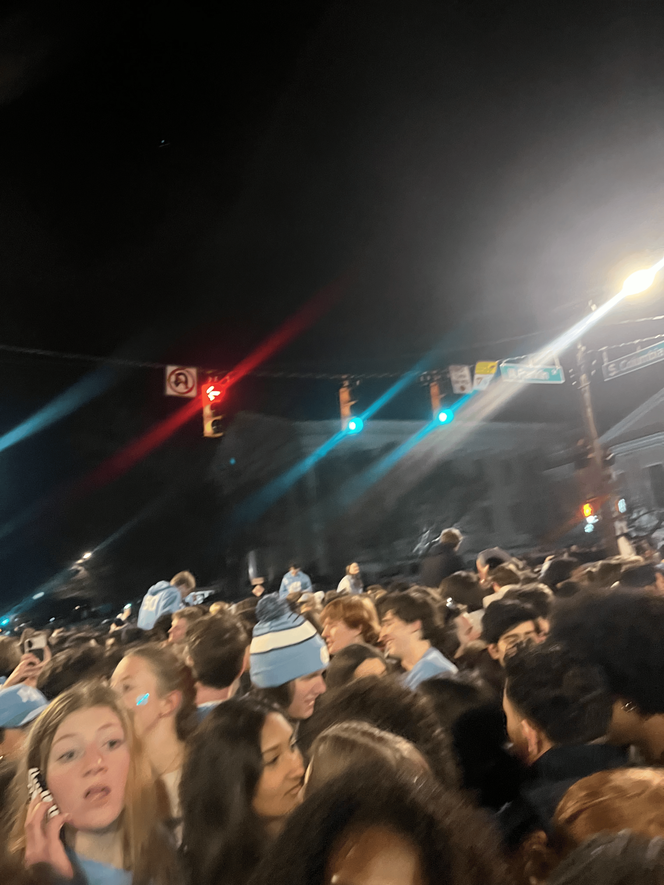
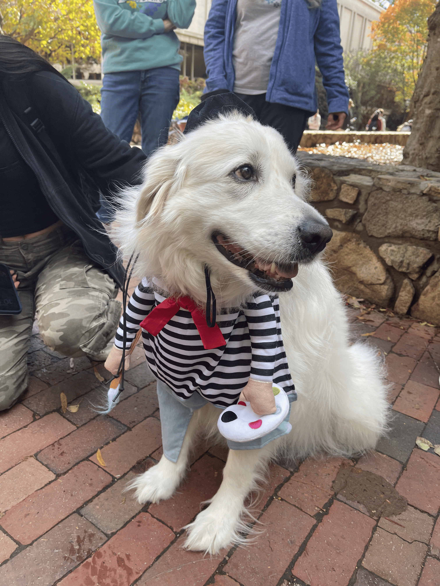
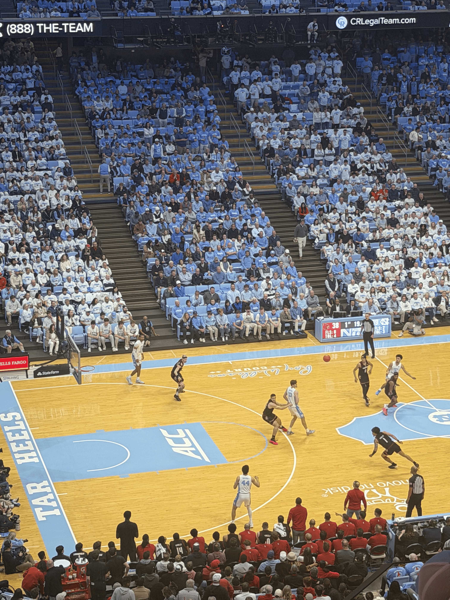
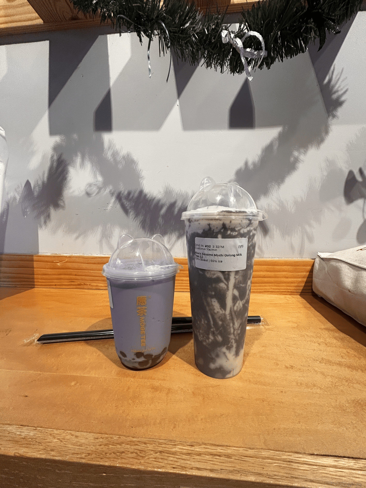
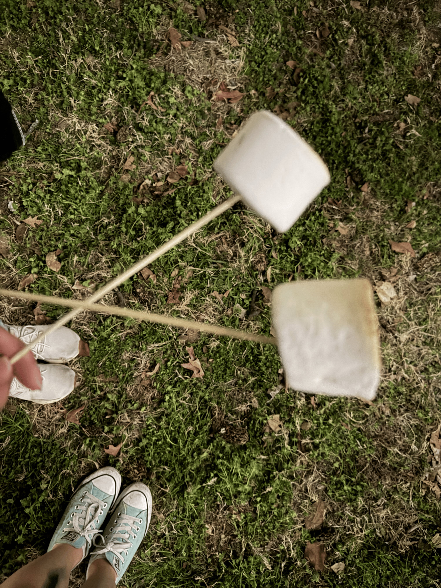

About Me
Hello! My name is Yazmin Lopez-Munoz, and I am a Computer Science student at UNC Chapel Hill.
You can check out my resume right here!
Classes
As a Computer Science student, many of my classes will be COMP, MATH, and STOR. Recently, I have been interested in adding Statistics as my second major so I've take a few electives to explore that as well.
I am currently taking the following classes:
- INLS161-001: Information Tools ( Course Website)
- ENGL140-001: Introduction to Gay and Lesbian Culture and Literature
- EDUC111-002: Career Exploration
In the Fall Semester I will be taking:
- COMP 211
- COMP 301
- MATH 232
- STOR 320
Past Classes
Second Semester
- COMP 210: Data Structures
- COMP 283: Discrete Structures
- IDST 112L: Death and Dying
- STOR 155: Introduction to Data Models and Inference
Discrete Structures was overall very challenging, but it pushed me to make friends and connections, which I will forever be greatful for. I had a great study group that helped me through the tough parts.
Funnest class of the semester! This interdisciplinary course approached the topic of death through a psychological and anthropological lens.
First Semester
- COMP 110: Introduction to Programming
- MATH 231: Calculus I
- ENGL 105: English Composition and Rhetoric
- GLBL 89: The Migratory Experience
- IDST 101: College Thriving
- IDST 111L: Data Literacy
UNC's introductory programming course. I struggled a bit as it had been a long time since I had done any programming, but I ended up learning a lot and having fun. This helped me decide if I wanted to pursue computer science further.
Interests and Hobbies
In this section, I will share some of my academic interests as well as my hobbies.
Interests
My interests include:
- Cybersecurity
- Data Science
- Web Development
Hobbies
My hobbies include:
- Crocheting
- Thrifting
- Painting
A little fun fact about me, I have been an instructor for Crochet Club since last semester!
UNC
I am a student at the University of North Carolina at Chapel Hill. Here are some of my favorite memories, places, and people!

Rushing Franklin

Hugs and Pups!

Finally getting Basketball tickets

Eating out with my friends

Meeting new people and making good friends
Contact
You can reach me at yazmlop@unc.edu.
Connect with me on LinkedIn.